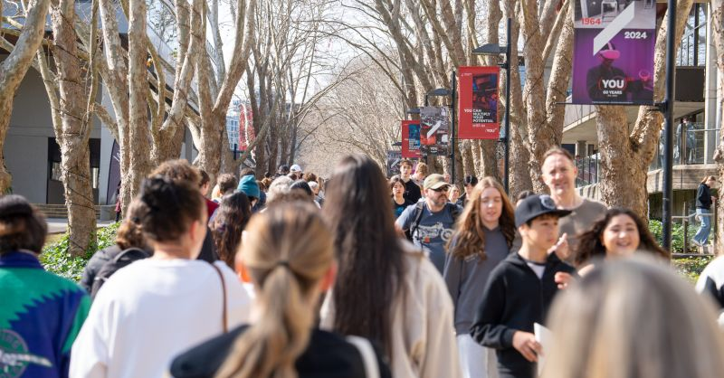
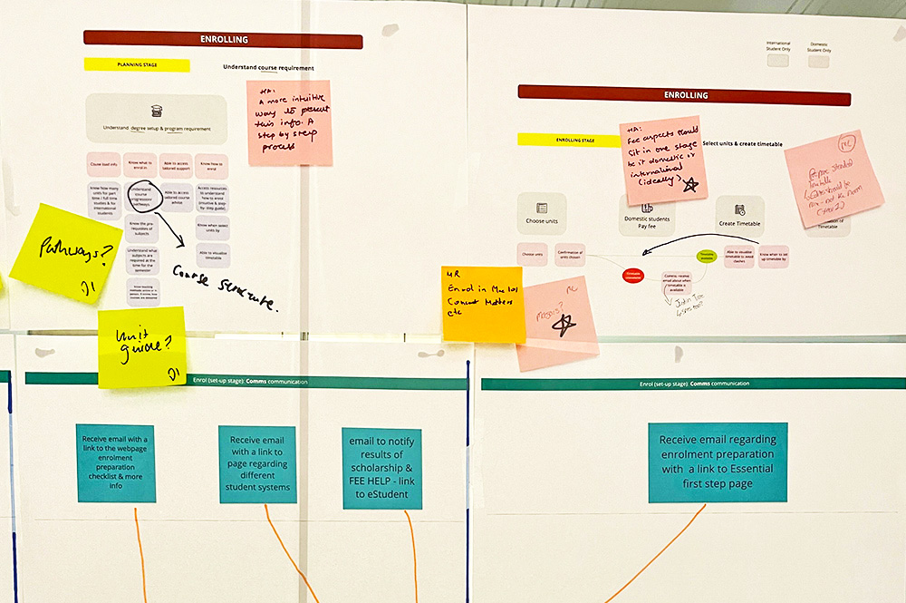
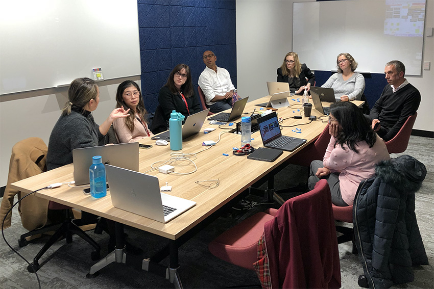
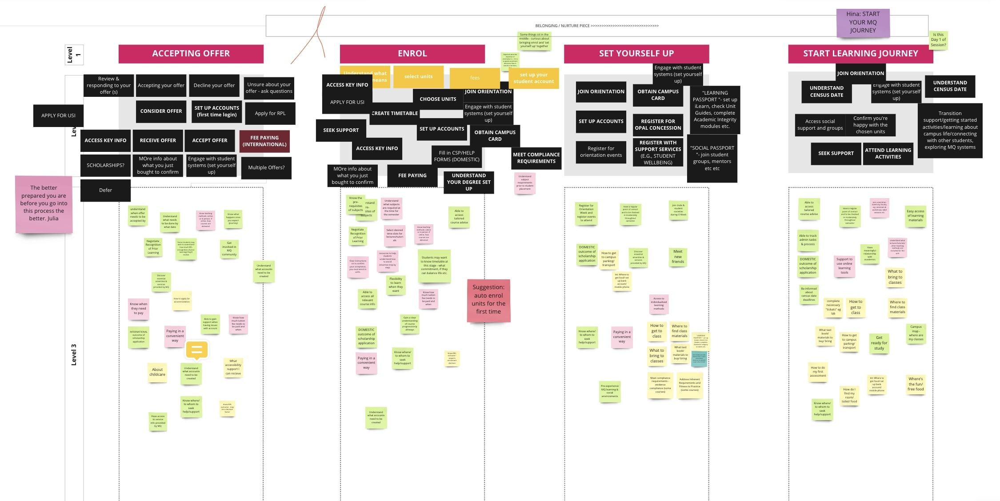
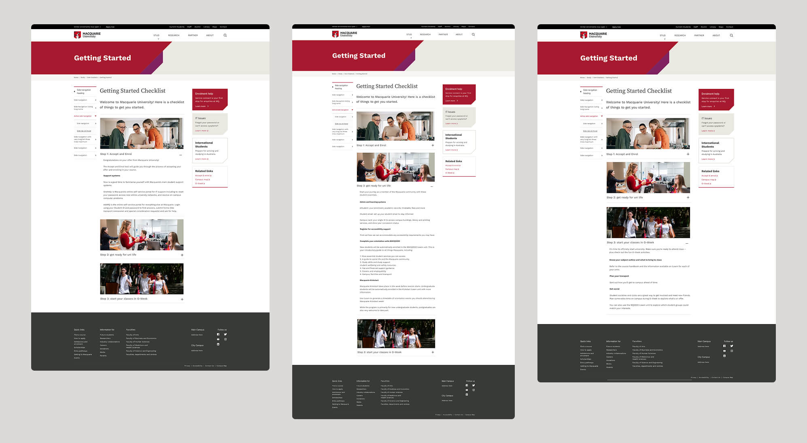
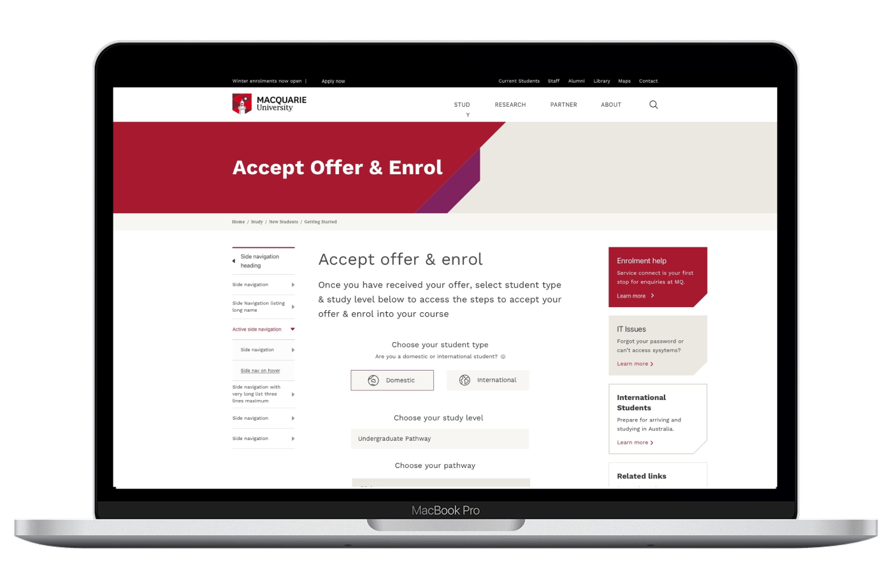
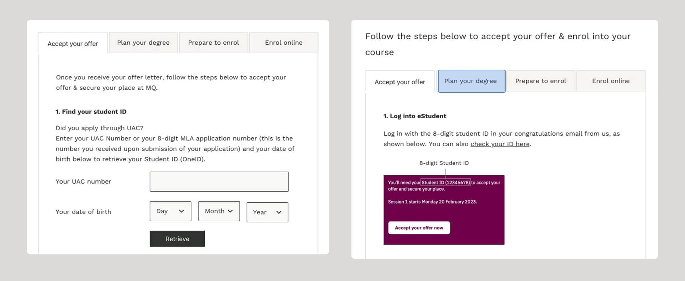
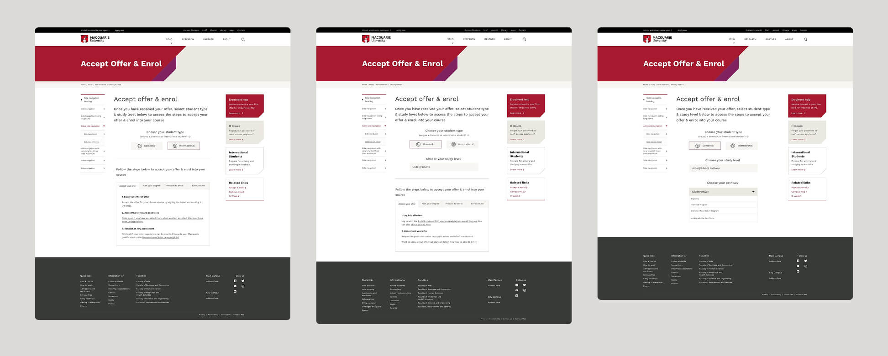

Role: Product Designer (UX/UI) & Service Designer
Industry: Higher Education
Tools: Sketch, InVision, Miro
Date: Sep 2022 – Jan 2023
Improving university student onboarding and enrolment experiences through user experience & service design
Students found both the onboarding and enrolment experiences confusing and inconsistent. The existing information was fragmented across webpages and emails, and the enrolment system was visually outdated and cognitively demanding, especially for international or first-year students.




We created a digital checklist aligned with the university's email campaigns to ensure consistency and reduce mental load. The toolkit offered a clean, visual guide for new students to complete tasks in a logical order, integrated with links and explanations.

We redesigned the enrolment page to simplify language, introduce a step-by-step visual journey, and reduce the intimidation factor. Icons and diagrams were used to support user understanding of terminology like “unit selection” and “credit points.”

We conducted six usability testing sessions with current Macquarie students to evaluate our prototypes and gather feedback. These sessions helped us identify confusing elements in the webpage’s information architecture and layout, uncover cognitive barriers in how users processed the content hierarchy, and collect direct recommendations for improvement.

The checklist toolkit we designed was adopted across multiple departments, leading to a noticeable reduction in student support queries during enrolment and increased confidence among new international students. This project reinforced my belief that impactful design goes beyond aesthetics — it’s about creating clarity, building confidence, and showing compassion. By aligning communication channels and simplifying complex journeys, we helped make a stressful transition smoother for thousands of students.

Get in touch to see how we can collaborate on your project
Contact Me